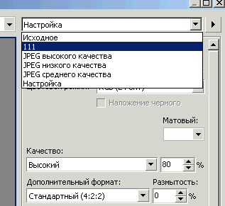

Меню экспорта в X5
Добрый_ХАМ / 10.03.2011, 12:54/00:41
Форум:
Я уже и так, старался приноровиться к новому меню экспорта, и эдак, - не могу. Подскажите cdr-монстры, что сделать что-бы в меню сохранялись последние использованные настройки для экспорта, а не сбрасывались на используемые по умолчанию? Подготовка макетов для пересылке по почте превратилась в мучение. Поможите чем сумеете!
не пробовал "откатиться" к старому окну экспорта ?
http://cdrpro.ru/news/2010-11-16-286
А лучше, на мой взгляд, пользоваться каким-нибудь экспорт-макросом
shark, не-а не пробовал. Ух совсем неопределённо это "Если сказать проще, то после отключение нового окна, Вы получите совершенно тот же функционал что и в Х4, без новшеств пятнадцатой версии"... Хочется знать подробности того чего мы себе отрезаем. Зато в комментах напомнили про "Export for web" на который я внимание-то и не обратил при ознакомлении с новшествами. На тот момент меня в Х4 экспорт вполне устраивал. Вот спасибо человеку. Сейчас буковку тока назначим, и вперёд - покорять мир!
Уважаемый Shark! Я недавно пользуюсь Х5, и у меня возникает та же проблема: "что сделать что-бы в меню сохранялись последние использованные настройки для экспорта, а не сбрасывались на используемые по умолчанию? Подготовка макетов для пересылке по почте превратилась в мучение". Пробовала перейти на старое окно, но и там настройки не сохраняются, постоянно требуется менять вручную CMYK на RGB, чего не требовалось в моей любимой версии х3.)))) Возможно, эта тема уже обсуждалась, в таком случае , если нетрудно, умоляю дать ссылку. Забыла указать, что экспортирую постоянно в JPEG, не для WEB.
я сделал просто пресет с готовыми настройками (ргб, 150 дпи) и каждый раз выбираю его, и он сам ставит нужные параметры.

(добавить-удалить пресеты можно в треугольнике справа от названий пресетов)
Shanty, здесь я согласен с mmgs - лучше сделать пресет с настройками и выбирать его для подстановки нужных параметров. Похоже, для Х5 это единственное решение. Правда, сам я не заморачиваюсь со всем этим и для экспорта пользуюсь своим макросом. :)
Макрос Export to JPG
К своему стыду не знакома с макросами, но теперь постараюсь вникнуть, спасибо за ответы!
Что касается пресета, получается то же самое лишнее движение, которого не надо было делать в Х3, что довольно ощутимо, когда экспортируешь много и часто))))
Поставила макрос, спасибо огромное, Sancho! До этого как-то не пользовалась макросами, побаивалась, оказалось, просто и удобно!!!! Если б еще горячая клавиша работала, а можно ли как-то настроить?
Shanty, для начала нажми в поле сочетание клавиш Ctrl + J, далее смотри в превью какие вкладки надо выбрать из списка по пунктам. В списке макроса выберешь тот, которому хочешь задать хоткей. Выбрала, вписала в окно "New Shortcut Key" свое сочетание и далее по пунктам.
Страницы